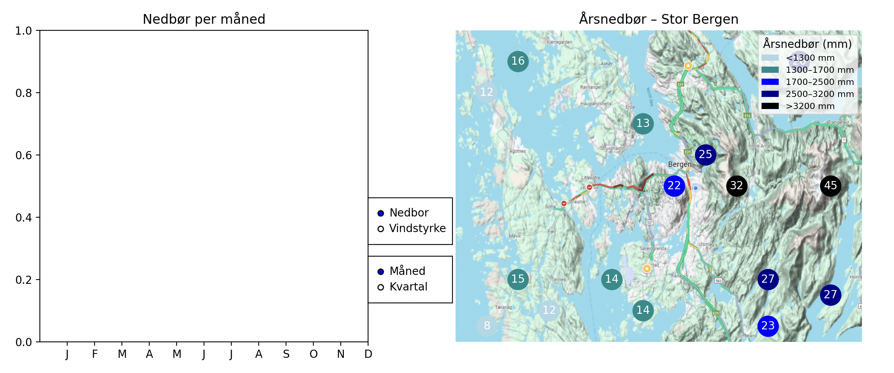
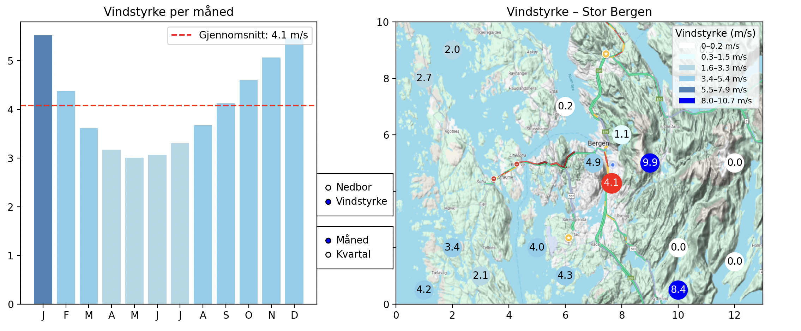
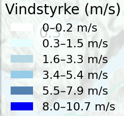

1) Hva ser du i appen?
Høyre side: kart
- Kart over Bergen. Oppå kartet sees punkter som representerer posisjoner i datasettet.
- Fargene viser nivå (skala/legend nede i kartet):
- Nedbør
- Vindstyrke
- Etiketter på punktene (for nedbør) viser årssum i hundre millimeter (f.eks. «19» ≈ 1900 mm).
Venstre side: diagram
- Måned: stolpediagram med 12 stolper (jan–des).
- Kvartal: 4 stolper (Q1–Q4).
- Farge på stolper følger samme skala som for kartet (nedbør eller vindstyrke).
Radioknapper (midt på)
- Visning: «Måned» eller «Kvartal».
- Data: «Nedbor» eller «Vindstyrke».

2) Hvordan bruker du appen?
- Start programmet (se «Oppstart» under).
- Velg med radioknapper:
- «Nedbor» for nedbør, «Vindstyrke» for vindstyrke.
- Visning: «Måned» eller «Kvartal» for hvordan diagrammet skal vises.
- Klikk i kartet på ønsket posisjon.
- Programmet beregner prediksjoner for de 12 månedene (polynomregresjon, grad 3) basert på klikk-koordinater og treningsdata.
- Venstre diagram oppdateres med verdier for valgt posisjon.
- Kartet markeres på klikkpunktet.
- Gjenta klikk for å se andre steder; bytt fritt mellom «Måned/Kvartal» og «Nedbor/Vindstyrke».

3) Oppstart
Krav
- Python 3.9+
- Avhengigheter: «numpy», «pandas», «matplotlib», «scikit-learn»
- Disse filene må ligge i samme mappe som «Semesteroppgave2025.py»:
- «NedborX.csv» – treningsdata for nedbør.
- «VindstyrkeX.csv» – treningsdata for vind.
- «StorBergen2.png» – bakgrunnskart.
Installer pakker (anbefalt i virtuelt miljø)
bash
python3 -m venv .venv
source .venv/bin/activate
python -m pip install --upgrade pip
python -m pip install numpy pandas matplotlib scikit-learn
Start programmet
bash
python Semesteroppgave2025.py
Et Matplotlib-vindu åpnes med kartet (høyre) og diagrammet (venstre).
4) Tolkning av farger og akser
- Nedbør (mm/år):
- Lys blå: <1300
- Mørkere cyan/blå: 1300–3200
- Svart: >3200
- Vindstyrke (m/s): trinn rundt Beaufort (0 til 12+) fra lyse til mørke/varme farger.
- Måned: X-akse 1–12, Y-akse verdi per måned.
- Kvartal: X-akse Q1–Q4.

6) TL;DR (cheat sheet)
- Start:
python Semesteroppgave2025.py - Velg Data: «Nedbor» / «Vindstyrke»
- Velg Visning: «Måned» / «Kvartal»
- Klikk i kartet → se oppdatert diagram
- Bytt visning/data som du vil – klikk nye steder
Lykke til! Klikk gjerne litt rundt i kartet og sammenlign steder, måneder og kvartal – for både nedbør og vindstyrke.